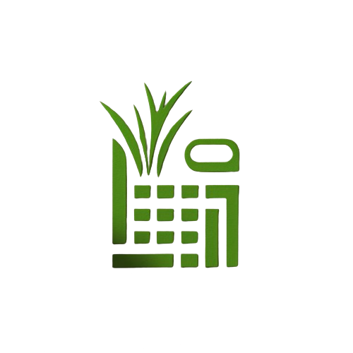

CaneMetrics
Cálculo de Densidad de Siembra
Distancia entre calles (m)
Distancia entre plantas (m)
Área en metros cuadrados (m²)
Variedad de caña
Calcular
Reporte de Producción
Tiempo de crecimiento de la caña:
{{ tiempoCrecimiento }}
Programación de la fertilización:
{{ programacionFertilizacion }}
Estimación de la producción:
{{ estimacionProduccion }}
Fecha estimada de producción:
{{ fechaProduccion | date:'dd/MM/yyyy' }}
Fecha estimada de cosecha:
{{ fechaCosecha | date:'dd/MM/yyyy' }}